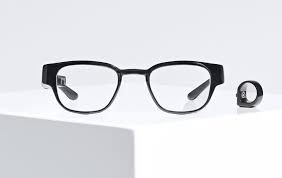
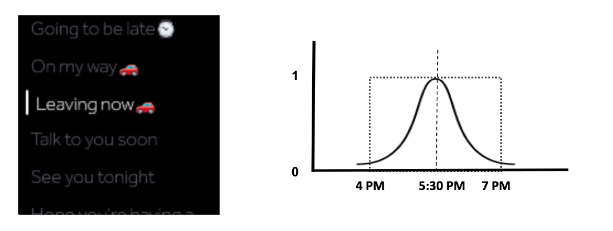
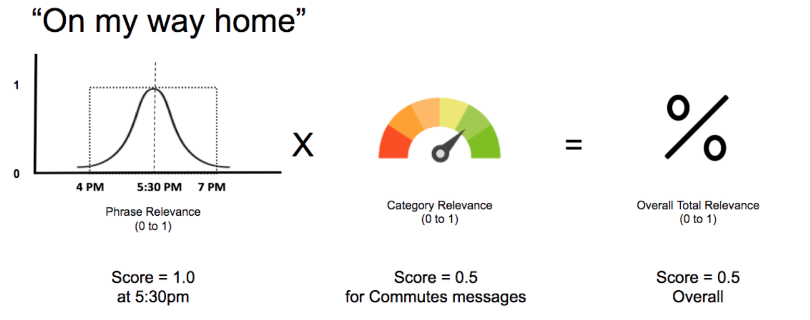

Focals: Contextual messaging for smartglasses

Description
QuickCompose is a messaging feature to initiate conversations with your contacts on smartglasses. This feature suggests contextual pre-canned messages based on the following factors:
- Time of day
- Location
- Calendar Events
- Routines
- Holidays
CHALLENGE
Focals are custom-built glasses with a display only you can see and is controlled with a joystick style ring. Focals provide the user with fast access to information on the go. There is a huge demand for staying connected with the people you care about and the information you need so you can stay on top of your day. Although this form factor comes with limited interaction capabilities (in this case a ring). Hence considering the need for staying connected with loved ones through messaging, we wanted to provide users with a way to compose messages on Focals?

PROCESS
Our design process started thinking about the kind of messages users usually send and also understanding the context behind these messages. We narrowed down the scope of the project to only focus on frequent messages that are usually sent throughout a day and which are more routinely based messages. Looking at our messaging logs and brainstorming with-in the concepts team we identified the below categories of messages.
- Commute related (leaving now, will be there soon, etc).
- General greetings (good morning, etc.)
- Meeting related messages (running late, go ahead without me, etc.)
- Everyday routines (Let's grab coffee?, Let's meet in the evening, etc.)
- Holidays (Happy St.Patrick's Day, etc.)
- Location based (at grocery store, restaurant, etc.)
Form Factor
The advantage of Focals is that its form factor - its close tp the human body and the face. Hence there is a lot of rich contextual data we can extract from the glasses and sensors. Example, where is the user looking (based on GPS + IMU), the physical state of the user (walking, driving, or sitting), is the user speaking or not, is the user in a meeting, etc. Hence we decided to build a contextual engine made up of several sensor data that informs us about the contextual state of the user.
Contextual Engine
We used this engine along with the time of the day to suggest the top-10 pre-canned messages user might want to say at a particular moment. This engine was modelled using a Gaussian distribution which determines the likelihood for a certain messages over a course of time. Example, the screen below shows the top messages at 5:30PM in the evening for the user. We can see that most of the messages are regarding the evening commute and some regarding routine.

User Research
Based on this minimum viable product, we decided to conduct to an internal study to validate our assumptions and the design probe to understand how well it fits into our target user's needs. And we quickly found out that the supported messages were very less and soon they became redundant for the users to use the same set of messages.
We decided to broaden the categories of messages and added a category relevance to our model so better prioritize messages for the user. The diagram below depicts the final model.

We also added 3-4 variations for each message based on the intent of the messages. This made sure that the user had some variety to messages everyday. For this we conducted a survey on Amazon Mechanical Turk to identify the common set of phrases people prefer to say for a particular intent.
After a second internal user study and looking at the feedback from our beta research, this feature was productized. We worked with the production teams to refine the interaction and visual components.
Next Steps
We have been receiving feedback from our customers about this feature and there are plans to add more contextual signals to the engine to enhance its prediction.